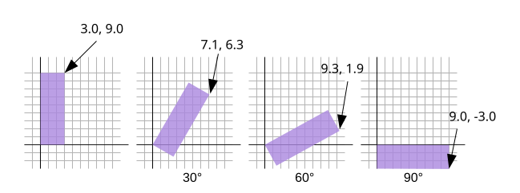

Este artículo es el segundo de una serie que esperamos que te enseñe sobre matemáticas 3D. Cada uno se basa en la lección anterior, por lo que es posible que te resulten más fáciles de entender leyéndolos en orden.
Voy a admitir de entrada que no tengo ni idea de si la forma en que explico esto tendrá sentido, pero qué demonios, vale la pena intentarlo.
Primero quiero presentarte lo que se llama un “círculo unitario” (unit circle). Si recuerdas las matemáticas de la escuela secundaria (¡no te me duermas!), un círculo tiene un radio. El radio de un círculo es la distancia desde el centro del círculo hasta el borde. Un círculo unitario es un círculo con un radio de 1.0.
Aquí tienes un círculo unitario. [1]
Observa cómo al arrastrar el manejador azul alrededor del círculo, las posiciones X e Y cambian. Estas representan la posición de ese punto en el círculo. En la parte superior, Y es 1 y X es 0. A la derecha, X es 1 e Y es 0.
Si recuerdas las matemáticas básicas de primaria, si multiplicas algo por 1, se queda igual. Así que 123 * 1 = 123. Bastante básico, ¿verdad? Bueno, un círculo unitario, un círculo con un radio de 1.0, también es una forma de 1. Es un 1 que rota. Así que puedes multiplicar algo por este círculo unitario y, en cierto modo, es como multiplicar por 1, excepto que ocurre la magia y las cosas rotan.
Vamos a tomar esos valores X e Y de cualquier punto del círculo unitario y multiplicaremos nuestras posiciones de vértices por ellos a partir de nuestro ejemplo anterior.
Aquí están las actualizaciones de nuestro shader.
struct Uniforms {
color: vec4f,
resolution: vec2f,
translation: vec2f,
+ rotation: vec2f,
};
struct Vertex {
@location(0) position: vec2f,
};
struct VSOutput {
@builtin(position) position: vec4f,
};
@group(0) @binding(0) var<uniform> uni: Uniforms;
@vertex fn vs(vert: Vertex) -> VSOutput {
var vsOut: VSOutput;
+ // Rotar la posición
+ let rotatedPosition = vec2f(
+ vert.position.x * uni.rotation.x - vert.position.y * uni.rotation.y,
+ vert.position.x * uni.rotation.y + vert.position.y * uni.rotation.x
+ );
// Añadir la traslación
- let position = vert.position + uni.translation;
+ let position = rotatedPosition + uni.translation;
// convertir la posición de píxeles a un valor de 0.0 a 1.0
let zeroToOne = position / uni.resolution;
// convertir de 0 <-> 1 a 0 <-> 2
let zeroToTwo = zeroToOne * 2.0;
// convertir de 0 <-> 2 a -1 <-> +1 (espacio de recorte)
let flippedClipSpace = zeroToTwo - 1.0;
// invertir Y
let clipSpace = flippedClipSpace * vec2f(1, -1);
vsOut.position = vec4f(clipSpace, 0.0, 1.0);
return vsOut;
}
Y actualizamos el JavaScript para añadir espacio al nuevo valor del uniform.
- // color, resolution, translation
- const uniformBufferSize = (4 + 2 + 2) * 4;
+ // color, resolution, translation, rotation, padding
+ const uniformBufferSize = (4 + 2 + 2 + 2) * 4 + 8;
const uniformBuffer = device.createBuffer({
label: 'uniforms',
size: uniformBufferSize,
usage: GPUBufferUsage.UNIFORM | GPUBufferUsage.COPY_DST,
});
const uniformValues = new Float32Array(uniformBufferSize / 4);
// offsets a los diversos valores de uniform en índices float32
const kColorOffset = 0;
const kResolutionOffset = 4;
const kTranslationOffset = 6;
+ const kRotationOffset = 8;
const colorValue = uniformValues.subarray(kColorOffset, kColorOffset + 4);
const resolutionValue = uniformValues.subarray(kResolutionOffset, kResolutionOffset + 2);
const translationValue = uniformValues.subarray(kTranslationOffset, kTranslationOffset + 2);
+ const rotationValue = uniformValues.subarray(kRotationOffset, kRotationOffset + 2);
Y necesitamos algún tipo de interfaz de usuario (UI). Este no es un tutorial sobre cómo crear interfaces, así que simplemente usaré una. Primero, algo de HTML para darle un lugar donde estar:
<body>
<canvas></canvas>
+ <div id="circle"></div>
</body>
Luego un poco de CSS para colocarla en algún sitio:
#circle {
position: fixed;
right: 0;
bottom: 0;
width: 300px;
background-color: var(--bg-color);
}
y finalmente el JavaScript para usarla.
+import UnitCircle from './resources/js/unit-circle.js';
...
const gui = new GUI();
gui.onChange(render);
gui.add(settings.translation, '0', 0, 1000).name('translation.x');
gui.add(settings.translation, '1', 0, 1000).name('translation.y');
+ const unitCircle = new UnitCircle();
+ document.querySelector('#circle').appendChild(unitCircle.domElement);
+ unitCircle.onChange(render);
function render() {
...
// Establecer los valores de uniform en nuestro Float32Array del lado de JavaScript
resolutionValue.set([canvas.width, canvas.height]);
translationValue.set(settings.translation);
+ rotationValue.set([unitCircle.x, unitCircle.y]);
// subir los valores de uniform al buffer de uniform
device.queue.writeBuffer(uniformBuffer, 0, uniformValues);
Y aquí está el resultado. Arrastra el manejador en el círculo para rotar o los deslizadores para trasladar.
¿Por qué funciona? Bueno, mira las matemáticas.
rotatedX = a_position.x * u_rotation.x - a_position.y * u_rotation.y; rotatedY = a_position.x * u_rotation.y + a_position.y * u_rotation.x;
Supongamos que tienes un rectángulo y quieres rotarlo. Antes de empezar a rotarlo, la esquina superior derecha está en 3.0, -9.0. Elijamos un punto en el círculo unitario a 30 grados en el sentido de las agujas del reloj desde las 3 en punto.
La posición en el círculo allí es x = 0.87, y = 0.50
3.0 * 0.87 - -9.0 * 0.50 = 7.1 3.0 * 0.50 + -9.0 * 0.87 = -6.3
Ese es exactamente el lugar donde necesitamos que esté.

Lo mismo para 60 grados en el sentido de las agujas del reloj:
La posición en el círculo allí es 0.50 y 0.87.
3.0 * 0.50 - -9.0 * 0.87 = 9.3 3.0 * 0.87 + -9.0 * 0.50 = -1.9
Puedes ver que a medida que rotamos ese punto en el sentido de las agujas del reloj, el valor X se hace más grande y la Y se hace más pequeña. Si siguiéramos pasando los 90 grados, X empezaría a hacerse más pequeña de nuevo e Y empezaría a hacerse más grande. Ese patrón nos da la rotación.
Hay otro nombre para los puntos en un círculo unitario. Se llaman seno (sine) y coseno (cosine). Así que para cualquier ángulo dado, podemos simplemente buscar el seno y el coseno de esta manera:
function printSineAndCosineForAnAngle(angleInDegrees) {
const angleInRadians = angleInDegrees * Math.PI / 180;
const s = Math.sin(angleInRadians);
const c = Math.cos(angleInRadians);
console.log('s =', s, 'c =', c);
}
Si copias y pegas el código en tu consola de JavaScript y escribes printSineAndCosineForAnAngle(30), verás que imprime s = 0.50 c = 0.87 (nota: redondeé los números).
Si lo juntas todo, puedes rotar tus posiciones de vértices a cualquier ángulo que desees. Simplemente establece la rotación al seno y coseno del ángulo al que quieras rotar.
... const angleInRadians = angleInDegrees * Math.PI / 180; rotation[0] = Math.cos(angleInRadians); rotation[1] = Math.sin(angleInRadians);
Cambiemos las cosas para tener simplemente un ajuste de rotación.
+ const degToRad = d => d * Math.PI / 180;
const settings = {
translation: [150, 100],
+ rotation: degToRad(30),
};
const radToDegOptions = { min: -360, max: 360, step: 1, converters: GUI.converters.radToDeg };
const gui = new GUI();
gui.onChange(render);
gui.add(settings.translation, '0', 0, 1000).name('translation.x');
gui.add(settings.translation, '1', 0, 1000).name('translation.y');
+ gui.add(settings, 'rotation', radToDegOptions);
- const unitCircle = new UnitCircle();
- document.querySelector('#circle').appendChild(unitCircle.domElement);
- unitCircle.onChange(render);
function render() {
...
// Establecer los valores de uniform en nuestro Float32Array del lado de JavaScript
resolutionValue.set([canvas.width, canvas.height]);
translationValue.set(settings.translation);
- rotationValue.set([unitCircle.x, unitCircle.y]);
+ rotationValue.set([
+ Math.cos(settings.rotation),
+ Math.sin(settings.rotation),
+ ]);
Arrastra los deslizadores para trasladar o rotar.
Espero que eso haya tenido sentido. A continuación, uno más sencillo: escalado.
Este círculo unitario tiene +Y hacia abajo para que coincida con nuestro espacio de píxeles, que también tiene Y hacia abajo. El espacio de recorte (clip space) normal de WebGPU tiene +Y hacia arriba. Como vimos en el artículo anterior, hemos invertido la Y en el shader. ↩︎